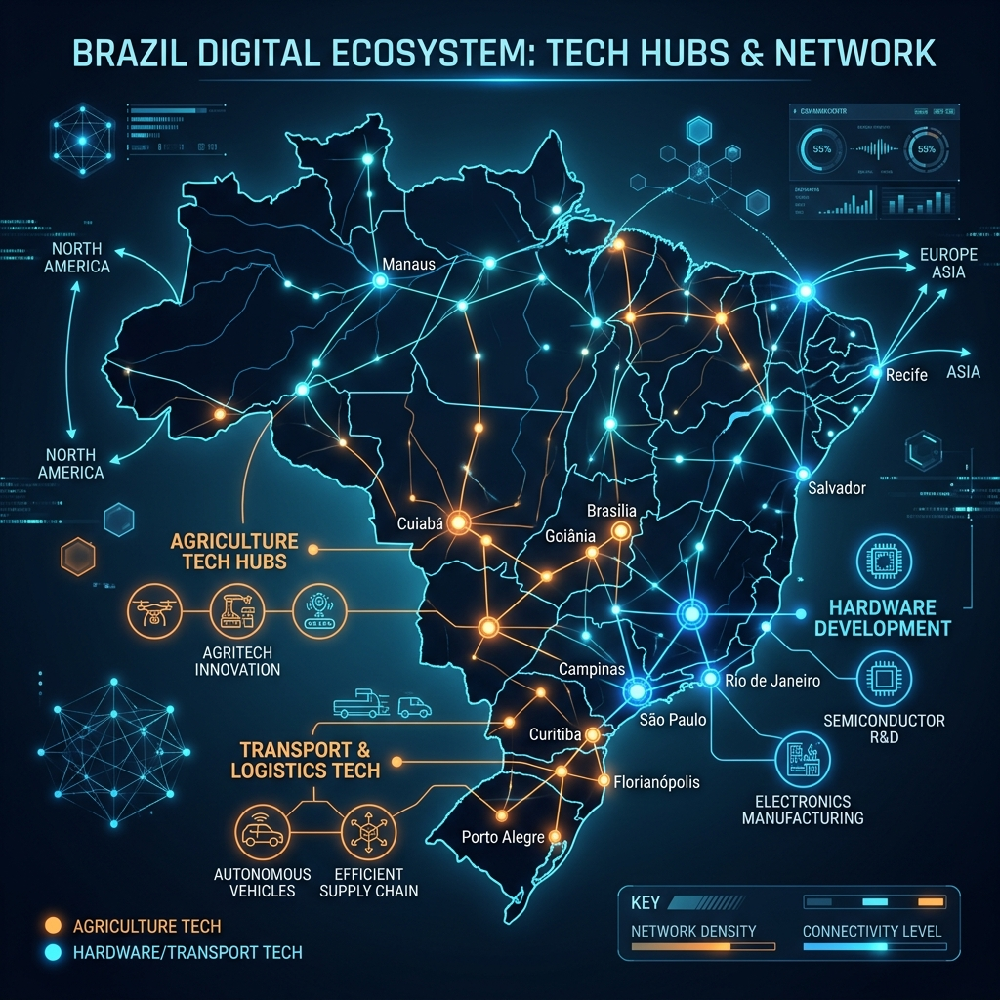
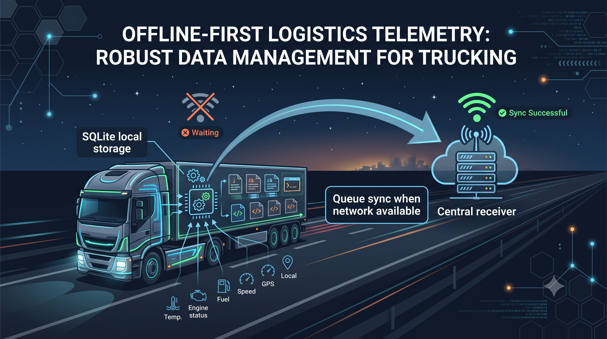

Série: Do Silício ao Chão de Fábrica — Episódio 07
O Brasil Invisível
Tempo de leitura: 6 minutos
Apesar da forte inércia financeira e cultural da nossa elite rentista, o Brasil não está estagnado. Longe das manchetes de startups especulativas da Faria Lima que queimam milhões para criar aplicativos de entrega de fumaça, existe um ecossistema silencioso e de altíssima relevância. É o Brasil Invisível da engenharia aplicada, operando em ilhas de excelência tecnológica onde o software precisa, obrigatoriamente, conversar de perto com as leis físicas da realidade.
Se mapearmos essas ilhas de evolução, o cenário nacional revela polos industriais e tecnológicos impressionantes:
- O Cinturão Logístico e Automotivo do Sul (PR e RS): Cidades como Curitiba, Campo Largo e a Serra Gaúcha (Caxias do Sul) formam o coração do transporte de carga pesada nacional. O software desenvolvido nessas montadoras e operadoras logísticas lida com telemetria complexa, sensores de fadiga e segurança de frotas. Se o código falhar, o caminhão tomba ou a carga desaparece do sistema. É engenharia de altíssima resiliência.
- A Fronteira Aeroespacial e Deep Tech (Interior de SP): Em São José dos Campos (berço da Embraer e do ITA) e em Campinas (ao redor da Unicamp e do CPQD), a tecnologia é tratada no nível do hardware e dos sistemas embarcados de tempo real. Não há espaço para o amadorismo de código espaguete; a segurança física das aeronaves e a infraestrutura óptica de telecomunicações dependem de lógica matemática pura e isolamento de falhas.
- O Agro 4.0 e o Edge Computing no Barro (Centro-Oeste e Sul): O agronegócio de alta precisão converteu-se no maior campo de testes de inteligência artificial descentralizada do país. Como rodar IA no meio de uma lavoura sem cobertura de internet? A resposta é processamento de borda (Edge Computing) embarcado diretamente na maquinaria agrícola pesada.
- O Vale do Hardware (Sul de MG): Santa Rita do Sapucaí é uma verdadeira anomalia no mapa nacional. Enquanto o país consome importações, essa cidade desenvolve placas, circuitos, sensores de Internet das Coisas (IoT) e infraestrutura crítica hospitalar, programando na interface direta onde o software encosta no silício físico e na eletricidade.
Essas ilhas de excelência mostram que o Brasil é capaz de construir infraestruturas duradouras. São essas empresas e indústrias de missão crítica que realmente necessitam do critério da senioridade, da bússola dos fundamentos clássicos e do trabalho minucioso de auditoria de arquitetura.

Infográfico ilustrando a rede descentralizada de inovação física e polos de engenharia no Brasil.
A Solução de Engenharia: Telemetria Offline-First
Para operar em ambientes sem conectividade garantida (como estradas de terra ou lavouras distantes), a arquitetura utiliza o padrão Offline-First. Os dados gerados pelos sensores são bufferizados localmente em bancos de dados de arquivo embarcados (como DuckDB para análise ou SQLite para escrita rápida) e enviados a uma fila de mensagens local (RabbitMQ ou broker MQTT). A sincronização com a nuvem central ocorre de forma eventual e assíncrona apenas quando a conexão física de rede é reestabelecida.

Esquema de bufferização local e sincronização eventual assíncrona.
A Lente do Negócio: Oportunidades Práticas Onde a Internet Não Chega
Para quem lidera operações de campo ou logística pesada, a mensagem comercial é valiosa: sistemas que dependem 100% de sinal de internet para registrar dados são passivos de falhas críticas de faturamento e operação. Implementar soluções offline-first permite que colheitadeiras tomem decisões de colheita guiadas por dados no meio do barro, e que caminhões registrem passagens e pesos em rodovias remotas sem perda de informação. Isso garante que a operação da sua empresa nunca pare e elimina gargalos manuais de digitação de dados posteriores, abrindo espaço para novos modelos de automação em cooperativas agrícolas e operadores logísticos no interior do país.
O orgulho da engenharia brasileira reside nos polos onde as soluções são testadas pelo calor, pela poeira das estradas e pelo atrito do mundo real.
Você tem buscado aplicar suas habilidades nas bolhas virtuais de especulação ou nos ecossistemas de missão crítica que sustentam a base física do país?
Lousa de Conceitos e Dicionário de Termos
- Broker MQTT: Intermediário de mensagens (servidor) que implementa o protocolo MQTT, facilitando a troca assíncrona de telemetria entre sensores leves e sistemas centrais em conexões instáveis.
- DuckDB: Banco de dados relacional embutido e de código aberto voltado para análise analítica de alta performance (OLAP) local de dados estruturados.
- Missão Crítica: Qualquer componente de hardware, software ou processo cuja falha operacional resulte na interrupção imediata das atividades da empresa ou acidentes físicos severos.
- Offline-First: Paradigma de desenvolvimento de software que prioriza o funcionamento local e autônomo da aplicação sem dependência de internet ativa, gerenciando a bufferização local e sincronização eventual assíncrona.
- RabbitMQ: Servidor de mensageria assíncrona (Message Broker) altamente flexível e confiável, utilizado para enfileirar e gerenciar dados de telemetria de veículos.
- Sistemas Embarcados (Embedded Systems): Sistemas de computação com propósito específico integrados de forma física ao dispositivo que controlam, com recursos limitados de memória e energia.
- SQLite: Banco de dados relacional embutido e autocontido de arquivo único, amplamente utilizado para persistência imediata e local em dispositivos móveis e hardware leve.
- Telemetria: Tecnologia que permite a medição remota e o envio de informações operacionais críticas de veículos ou sensores para centrais de análise de dados.
— Fim do Episódio 7. Retorne ao Episódio 6 ou continue no Episódio 8 (Epílogo): A Bússola e o Acelerador. Índice da série em: Chamada e Índice.
Nota do Autor: Sétimo episódio da série "Do Silício ao Chão de Fábrica", mapeando as forças de engenharia que sustentam silenciosamente a economia real brasileira.